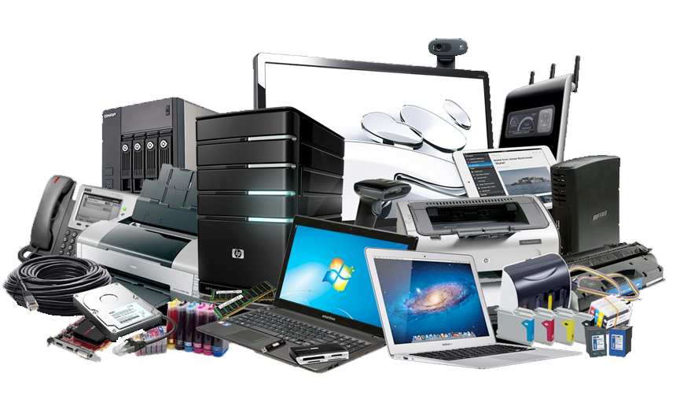

Tecnológicas
- Tecnología adecuada para satisfacer sus necesidades actuales y futuras.
- Equipos de última generación acordes a sus requerimientos.
- Renovación tecnológica.
|
 |
Oportunidad
- Facilidad para implementar nuevos puestos de trabajo,
realizar capacitaciones, efectuar migración de sistemas.
- Flexibilidad en la negociación.
|
Financieras
- No compromete capital de trabajo para renovación tecnológica.
- Cero inversión en activos no productivos.
- Cero gastos de mantenimiento y soporte.
- Cero gastos de depreciación.
|